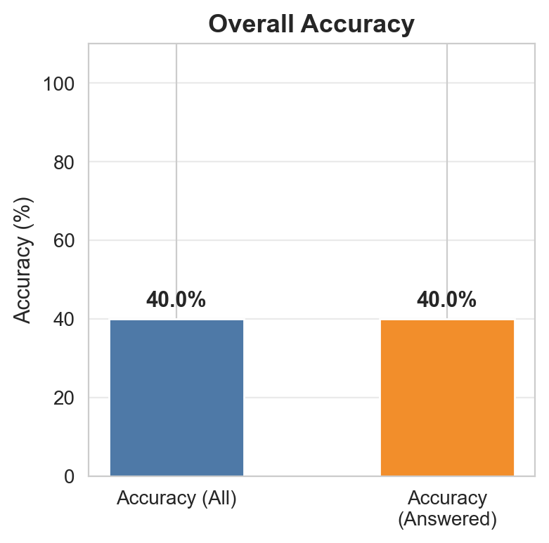
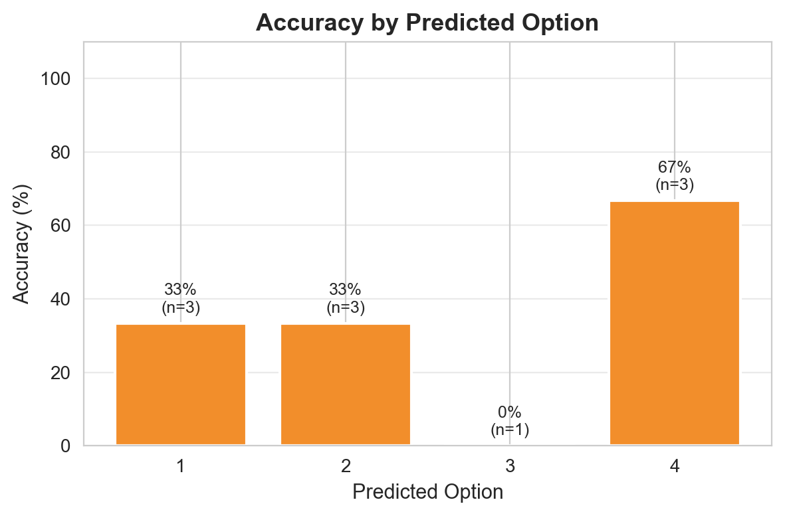
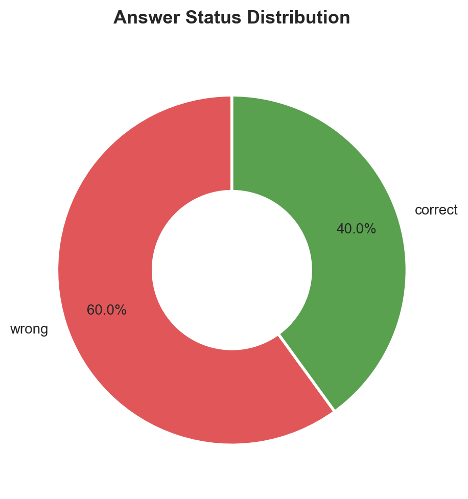
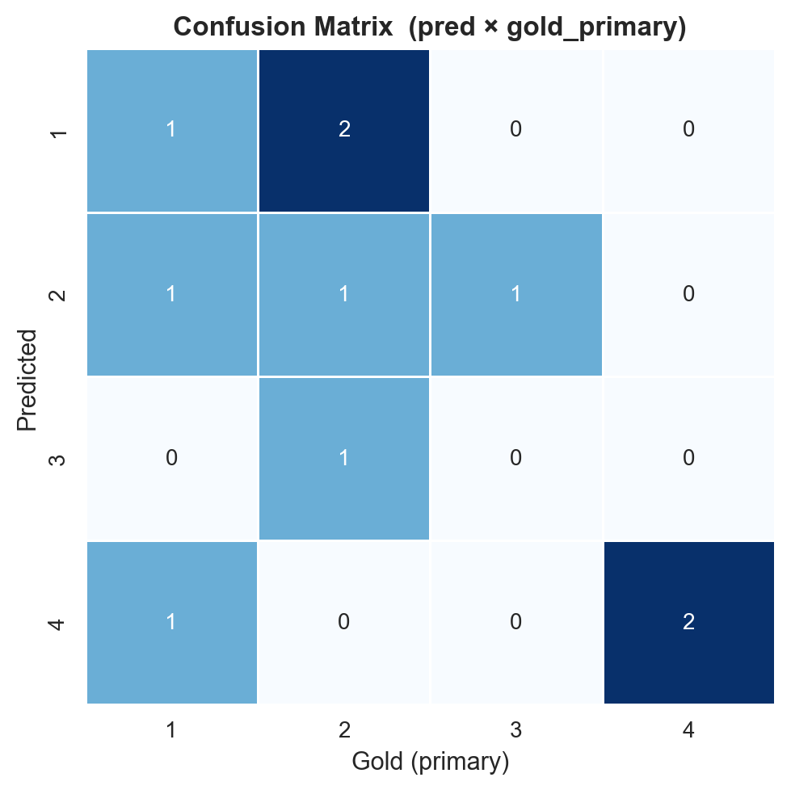
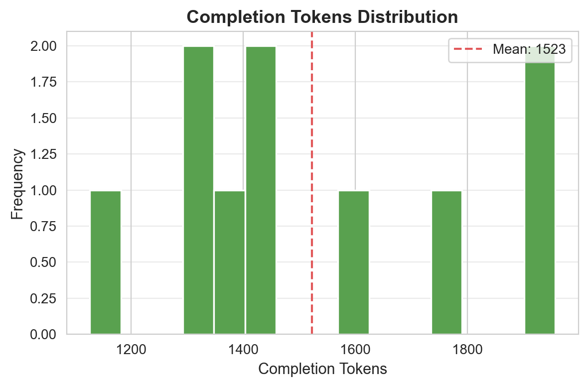
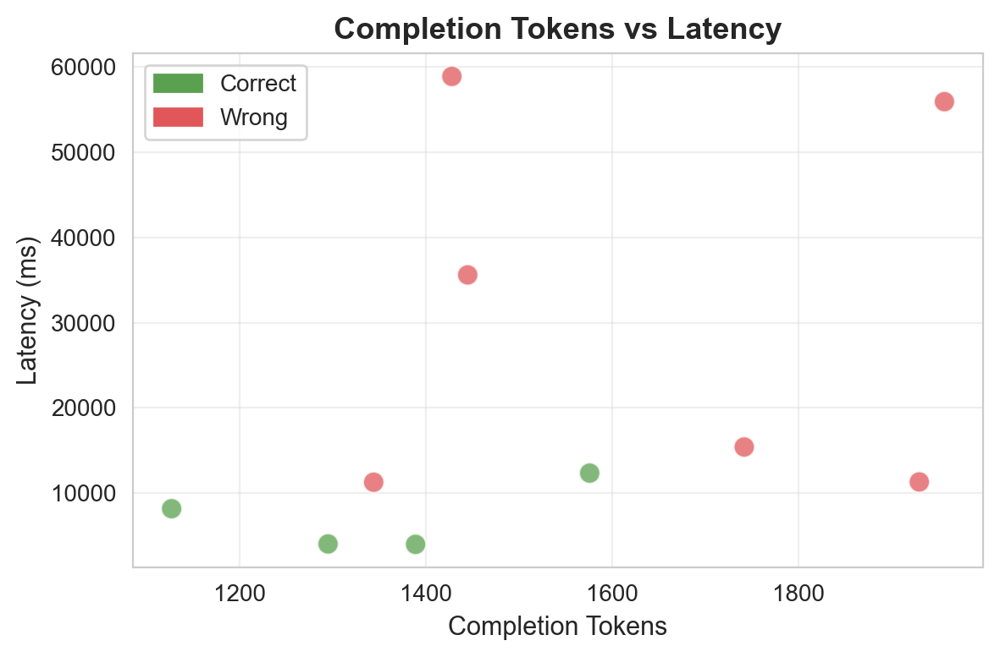
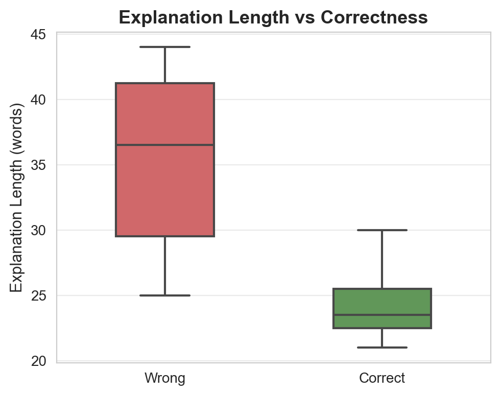
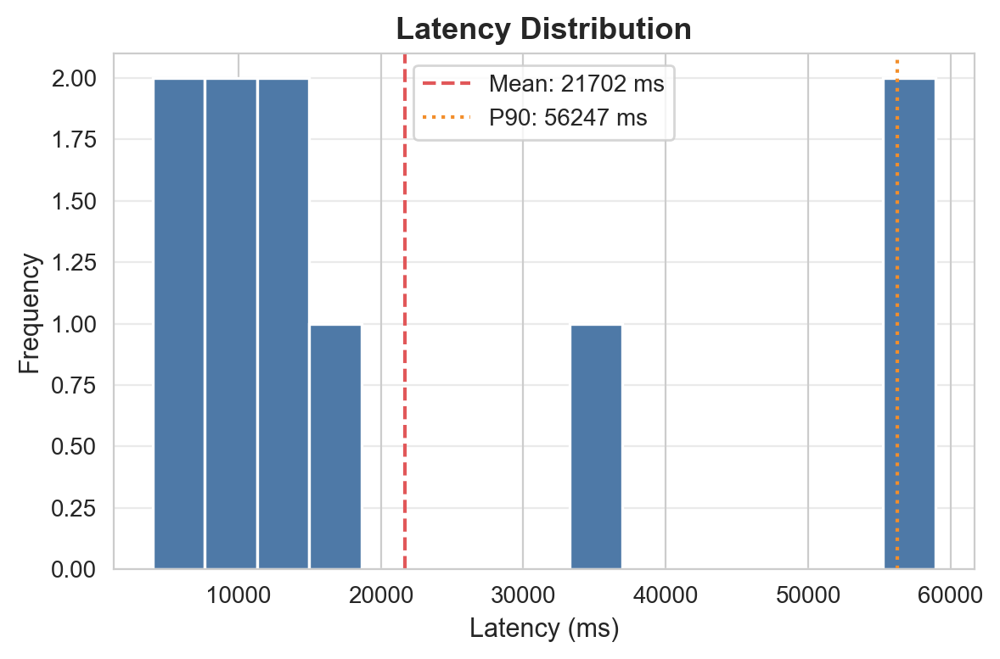
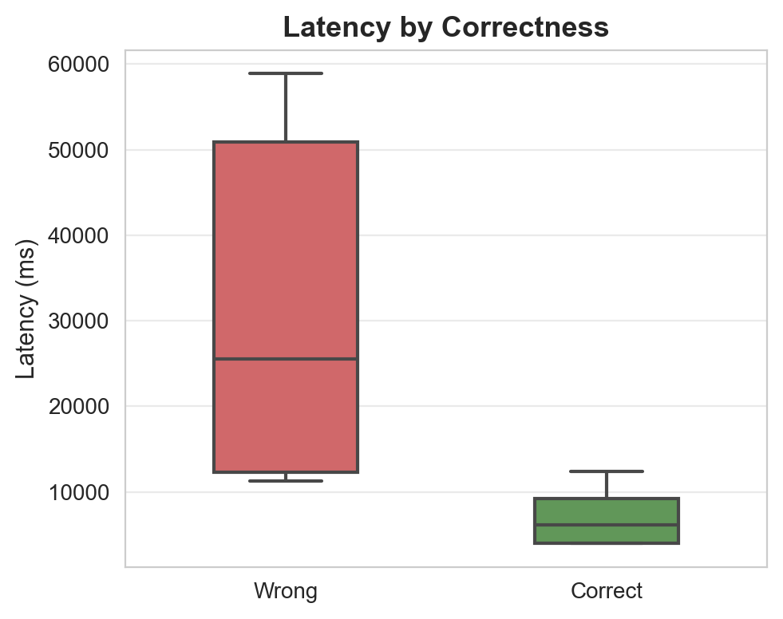

سوالات: 10 | پاسخدادهشده: 10 | بیپاسخ/خطا: 0

دقت کلی مدل

دقت به تفکیک گزینه

توزیع وضعیت پاسخها

ماتریس درهمریختگی

توزیع توکنهای خروجی

توکن vs تأخیر

طول توضیح vs صحت

توزیع تأخیر

تأخیر به تفکیک صحت
| ID | پاسخ مدل | پاسخ صحیح | نتیجه | تأخیر (ms) | توکن | خلاصه استدلال |
|---|---|---|---|---|---|---|
| 1 | 2 | 3 | ❌ | 11311 | 1930 | مطابق ماده ۳۴۸ قانون مدنی حواله عقد مستقلی است و با فسخ بیع منفسخ نمیشود، اما در اینجا حواله بهعنوان تسویه بدهی سابق بوده و نه پرداخت ثمن بیع، بنابر... |
| 2 | 2 | 1 | ❌ | 11278 | 1344 | دلیل لبّی مبتنی بر تعبیر لفظی و عرفی است و اصول لفظی در تحلیل آن جاری هستند، مطابق اصول فقهی و ماده ۱۰ قانون مدنی... |
| 3 | 2 | 2 | ✅ | 4032 | 1295 | مطابق ماده ۶۷۸ قانون مجازات اسلامی تخفیف مجازات در جرم اسیدپاشی ممنوعیت مطلق ندارد و در شرایط قانونی قابل اعمال است... |
| 4 | 4 | 1 | ❌ | 58916 | 1428 | مطابق ماده ۶۱۹ قانون تعزیرات، مجازات توهین به رؤسای سه قوه و رئیس مجمع تشخیص مصلحت نظام غیرقابل تخفیف است، بنابراین ادعا در گزینه ۴ خلاف قانون است... |
| 5 | 4 | 4 | ✅ | 12348 | 1576 | مطابق ماده ۷۸۷ قانون مدنی ابراء عقدی نهایی و غیرقابل فسخ است و درج شرط فسخ در آن با نص قانونی مغایرت دارد... |
| 6 | 1 | 2 | ❌ | 15414 | 1742 | مطابق ماده ۱۲۳ و ۱۲۴ قانون اصول دادرسی مدنی، استرداد دعوی در هر مرحله قبل از حکم نهایی پذیرفته میشود و قرار رد دعوی قطعی است؛ تنها در صورت صرفنظر کا... |
| 7 | 1 | 2 | ❌ | 55950 | 1957 | مطابق ماده ۱۰۷ قانون آیین دادرسی مدنی، ارسال درخواست رسمی تغییر زمان جلسه پیش از جلسه، عذر مشروع است و حکم نباید غیابی توصیف شود، اما چون دادگاه اشتبا... |
| 8 | 1 | 1 | ✅ | 3986 | 1389 | مطابق ماده ۲۷۰ قانون تجارت، تصمیم انحلال شرکت و اسامی مدیر یا مدیران تصفیه باید ظرف پنج روز به مرجع ثبت شرکتها ابلاغ شود... |
| 9 | 4 | 4 | ✅ | 8173 | 1127 | اصل ۱۴۱ قانون اساسی تنها مشاوره فنی و مالی و عضویت در هیئتهای مدیریتی و بازرسی و تأسیس شرکتهای خصوصی را ممنوع کرده، اما مشاوره حقوقی را ممنوع ندانست... |
| 10 | 3 | 2 | ❌ | 35612 | 1445 | مطابق اصل ۱۶۷ قانون اساسی، قاضی در حضور قانون مدون مجبور است حکم را بر اساس آن صادر کند و استناد به فقه حتی اگر نتیجه آن با قانون همخوانی داشته باشد، ... |